刷路由器流程
校园网路由器
前言
实现路由器自动认证广大校园网。
基本步骤
- 刷入 Breed
- 刷入 Openwrt 系统
- 装入 MiniEAP 插件
- 配置路由器
刷入Breed
简要
为了防止刷入 Openwrt 失败导致路由器变砖，我们需要先刷入 Breed (不死鸟)。因为有些官方升级固件自带 bootloader（引导加载程序），如果从官方固件升级，会导致现有 bootloader 被覆盖。而当 Breed 更新固件时，它会自动删除固件附带的 bootloader（引导加载程序），从而可以防止 Breed 被覆盖。
刷入 Breed 之前我们可以先将几个重要的 bin 文件（all、bootloader、eeprom）保存，保留路由器原来的系统（如果需要保留的话），一般能够刷机的路由器网上资料都很多，这里我就没有进行保存了。
注意：你需要有一台能够刷机的路由器，请自行到网上查询你的路由器是否能刷机
方法
刷入 Breed 一般有两种方法，一种是 telnet 方法，另一种是 ssh 方法。主要就是通过 PC 端远程控制路由器内部的文件。Breed 常用平台有 MT7620平台、MT7621平台、MT7688平台。路由器常见的芯片有 MT7620、MT7621、MT76x8等，是联发科技（MediaTek）生产的芯片，通常用于无线路由器和嵌入式设备中。
用一根网线将路由器的一个 LAN 口和电脑网线接口连接起来（WAN可不连），接着查看你的路由器 IP 地址（默认网关），然后通过远程连接你的路由器访问内部文件刷入 Breed，由于不同路由器进行内部访问的方法各不相同，本人也没找到一种适用全设备的通用方法，以下方法分布针对斐讯 K2 和小米 4C。
- 斐讯 K2
这里踩了好多坑，可能是不同版本的原因；最后采用了斐讯K1、K2、K2P 刷机、刷入Breed 辅助工具 | tb (tbvv.net)这个文章的提供的刷机工具，成功刷入 Breed。
采坑记录
- 一开始采用斐讯K2刷不死breed与第三方固件教程 - 法号阿兴 - 博客园 (cnblogs.com)这篇文章提供的工具进行一键刷机，但是中途出现了开启路由器 Telnet 服务失败，于是网上寻找开启路由器服务的方法；
- 采用了斐讯K1K2新版固件v22.4.xx.xx简单刷机教程 - 网络技术 - 蛐蛐工作室 (qqgzs.com)该文章提供的方法——修改 HTML 成功开启路由器 Telnet 服务。
- 开启完之后，继续采用路由器刷机工具刷机，又出现了上传固件失败。
- 网上查询没找到解决方法所以最终采用了斐讯K1、K2、K2P 刷机、刷入Breed 辅助工具 | tb (tbvv.net)这个文章的提供的刷机工具，成功刷入 Breed。
还有一种更麻烦的方法就是开启路由器的 Telnet 服务，然后对路由器的内部进行操作；开启路由器 Telnet 服务也有多种方法，网上有提供了多种工具，本人测试过发现没什么用，可能是路由器不同版本的问题。最后
- 小米 4C
采坑记录
- 采用斐讯K2刷不死breed与第三方固件教程 - 法号阿兴 - 博客园 (cnblogs.com)这个工具应该是行得通的，本人没试过。
- 采用小米路由器4C刷机教程（openwrt） - 简书 (jianshu.com)这篇文章能够正常刷入 Breed，但是我手动备份的 eeprom 文件大小有问题，在网上找到了别人备份成功的文件。
刷入第三方固件
这里采用 Openwrt 官方原生固件。
进入 Breed 控制台方法
此时的连接方式不变，路由器的 WAN 口最好先拔掉。拔掉路由器供电线后，长按路由器 RESET 按钮 5 秒左右（手不要松开按钮），这时给路由器通电，等待 5 秒后松开 RESET 按钮，浏览器输入 192.168.1.1 ，即可看见 Breed 控制台。
K2 刷入固件
(闪存布局: K2 大部分固件是 0x50000，官方 V22.5.XX.XX 以后的固件选 0xA0000，固件无法做到统一，如果不启动就换另一种布局重刷)。
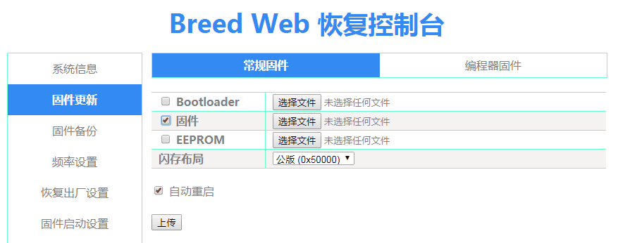
然后刷入系统固件，一般是先刷入kernel.bin，后再刷入 sysupgrade.bin （如果有 kernel.bin 话）。
刷入固件之后等待路由器重启即可。
注意：不同固件的路由器的 IP 地址一般不一样，建议刷完固件后查看以下 IP 地址先。
xiaomi4C 刷入固件
由于 xiaomi4C 的官方 Openwrt 固件 kernel 的内存地址不相同，而刷入的 Breed 版本都是通用的，图形界面上也能修改的位置有限，没有对此进行适配，因此我们需要通过 telnet 服务对路由器进行手动刷入固件。
具体实现方法参考这篇文章：小米路由器4C刷openwrt | BBSD丿草丶帽的个人博客 (luhawxem.com)
编译 MiniEAP
MiniEAP 是一个用于在无线局域网（Wi-Fi）上进行身份验证和接入控制的小型开源项目。它通常用于一些高校和公共场所的Wi-Fi网络，以提供用户身份认证和访问控制。MiniEAP 的主要功能包括：
- 身份认证：MiniEAP 可以帮助用户在连接到 Wi-Fi 网络之前进行身份认证。用户通常需要输入用户名和密码等凭据，以验证其身份。
- 接入控制：一旦用户成功进行身份认证，MiniEAP 可以控制其对Wi-Fi网络的访问权限。这可以包括访问时间限制、流量控制等。
- 兼容性：MiniEAP 通常兼容多种Wi-Fi网络和认证方式，包括EAP-TTLS、EAP-PEAP、EAP-MSCHAPv2等。这使其适用于不同类型的Wi-Fi网络。
- 开源：MiniEAP 是一个开源项目，这意味着开发人员可以查看其源代码，进行定制和改进，以适应不同的网络需求。
这里我们为了让路由器能够代替我们手动认证特定的校园网，采用了带有 GZHU 字段的 MiniEAP。
如果你的路由器芯片为：MT7620、MT7621、MT76x8 之一的话，本文提供了编译好的相对应的 MiniEAP 插件。
这一步相对比较麻烦，需要在 Linux 系统上进行操作，下面以 MT7620 为例。
安装相关依赖库和 C 编译环境
1 | sudo apt-get update |
下载相对应的 SDK
SDK(Software Development Kit)的缩写，即软件开发工具包，它是一组软件工具和库，开发人员使用它们来为特定平台、硬件或软件框架创建应用程序。
首先你不仅要知道你的路由器的芯片还要知道其对应的 CPU 架构，上述提到的三种芯片都是 Ramips 架构(基于 MIPS 架构)，然后到OpenWrt Downloads下载对应的 SDK，这里我采用了19.07.07版本。
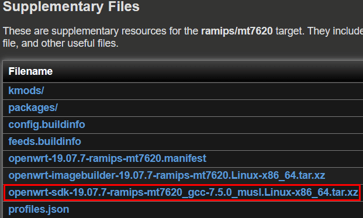
这里采用 wget 的方法
1 | mkdir router_openwrt # 创建文件夹 |
解压SDK
1 | tar xvf openwrt-sdk-19.07.7-ramips-mt7620_gcc-7.5.0_musl.Linux-x86_64.tar.xz #解压sdk |
克隆代码
1 | git clone https://github.com/ysc3839/openwrt-minieap.git -b gzhu package/minieap # -b 选择对应的分支 |
选择编译的包
1 | make menuconfig |
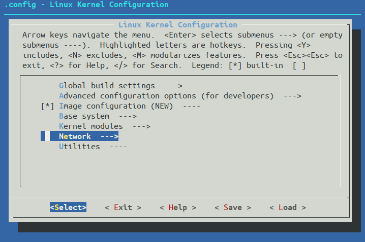
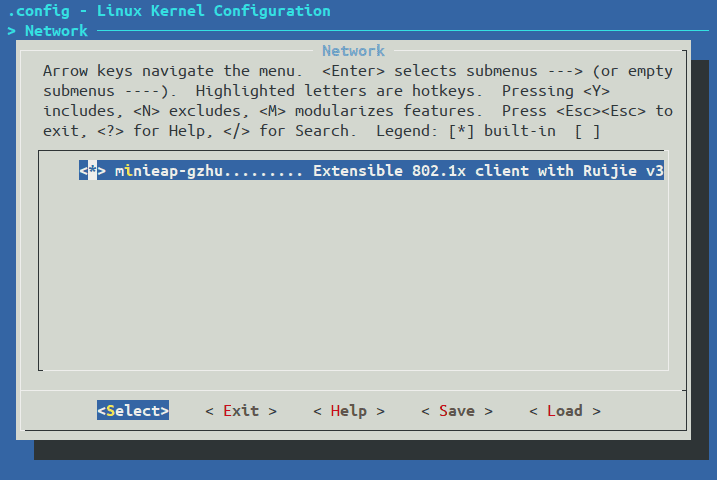
空格改变状态，改为 <*> ，然后 Save 之后 Exit。
开始编译
1 | make package/minieap/compile V=s # make /软件包/complie V=s 编译makefile文件并输出调试信息 |
编译成功后会在 SDK 目录下的bin/packages/mipsel_24kc/base下生成一个minieap-gzhu_0.92.1-4_mipsel_24kc.ipk文件
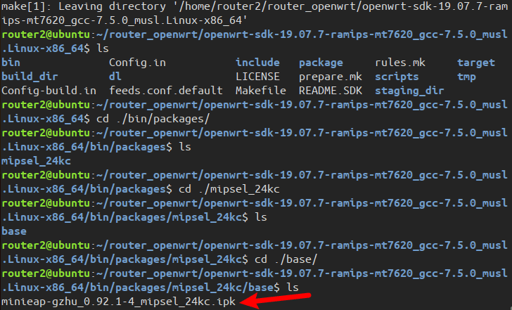
编译 luci-proto-minieap
- 回到原来的 SDK 目录下
1 | cd /path/to/your/sdk |
- 安装 luci feed （便于操作 MiniEAP）
1 | ./scripts/feeds update luci |
- 克隆代码
1 | git clone https://github.com/ysc3839/luci-proto-minieap.git package/luci-proto-minieap |
- 选择要编译的包
1 | make menuconfig # 选择# 依次选择 "LuCI" "Protocols" "luci-proto-minieap" "save" "OK" 然后一直"Exit"回到控制台 |
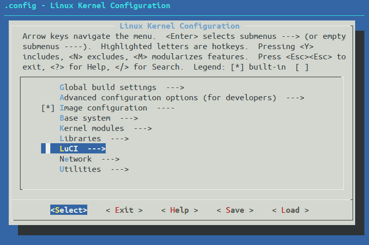
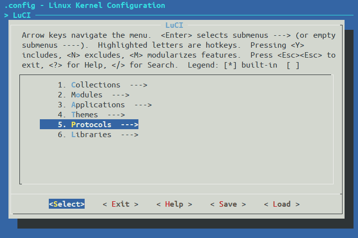
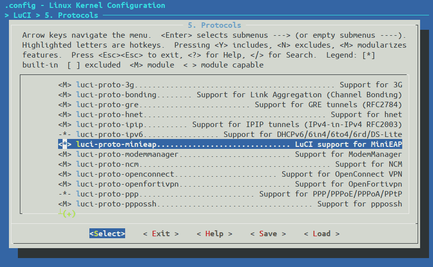
空格改变状态，改为 <*> ，然后 Save 之后 Exit。
- 开始编译
1 | make package/luci-proto-minieap/compile V=s # make /软件包/complie V=s 编译makefile文件并输出调试信息 |
编译成功后即可在同样的位置看到多出两个 ipk 文件。
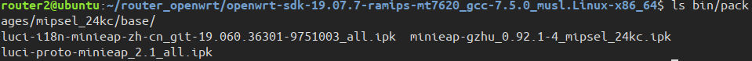
接下来你只需要先保存好这三个 ipk 文件即可。
遇到的问题
在安装 luci feed 的时候你可能会遇到 openwrt 镜像源太差了，下载慢或者下载一半就失败的问题，你可以打开通过修改 feeds.conf.default文件来进行加速。
1 | sudo vim feeds.conf.defalut # feeds.conf.defalut 在 sdk 目录下 |
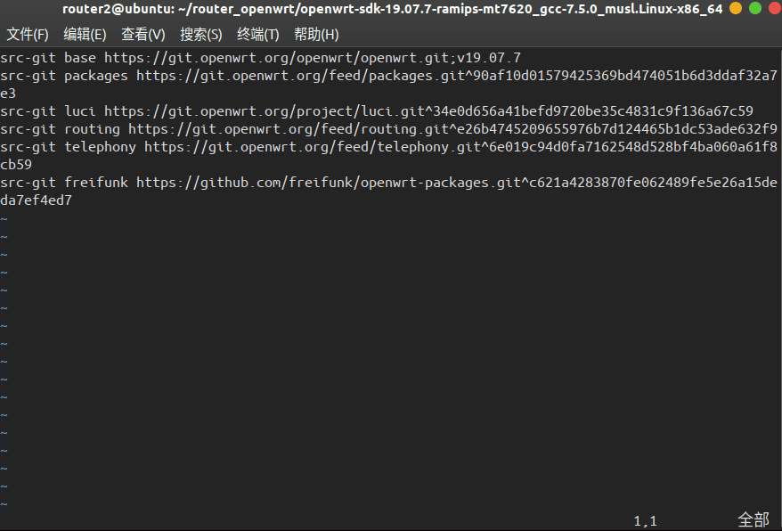
我们这里只需要修改 luci 相关的包即可。将 https://git.openwrt.org/project/luci.git一串字符串 改为 https://gitee.com/harvey520/luci.git。
另外当你改完源之后，可能会出现 remote:Unauthorized fatal: Authentication failed for ... 这个问题，你可以参考这篇文章。我最后是直接将库 fork 到自己的库然后再进行操作。
配置路由器
注意：此时路由器的 WAN 口不要接校园网的网线，只需要用一根网线将路由器的一个 LAN 口连接电脑网线接口。
安装 MiniEAP
- 输入路由器管理地址，初始密码一般为
password。 - 点击
Upload Package按照顺序将编译好的 ipk 文件依次上传安装。
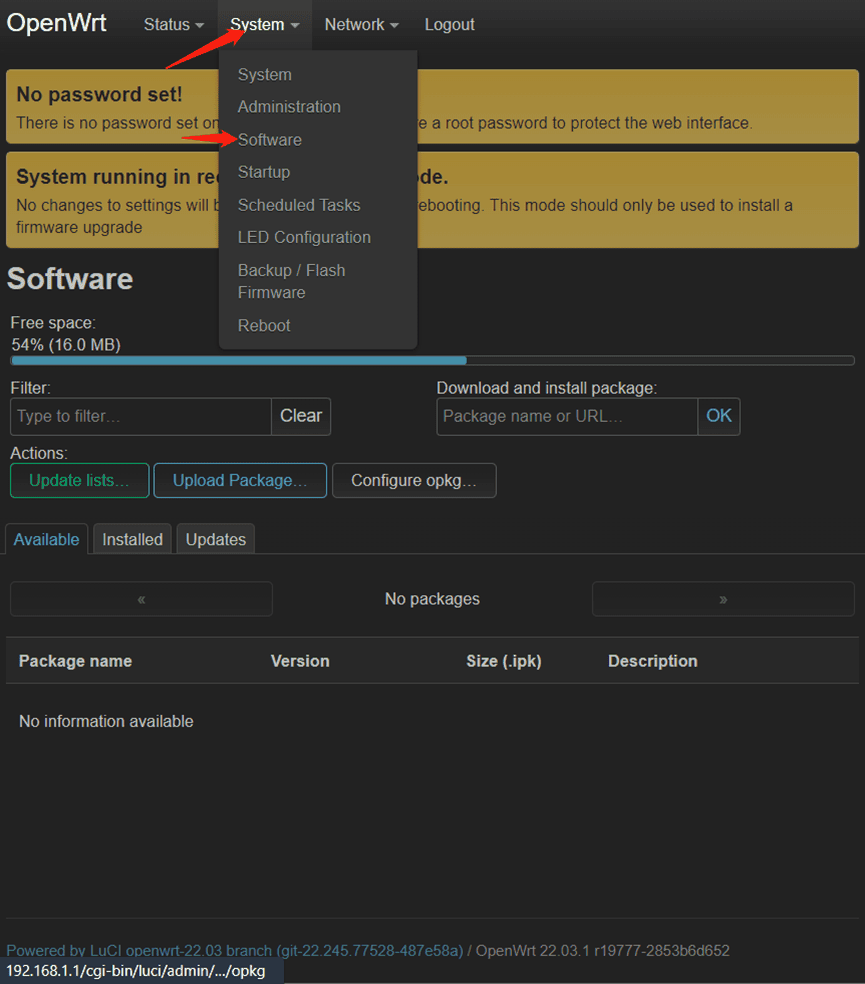
- 重启系统
使用MiniEAP
- 检查
WAN Proticol是否为DHCP client
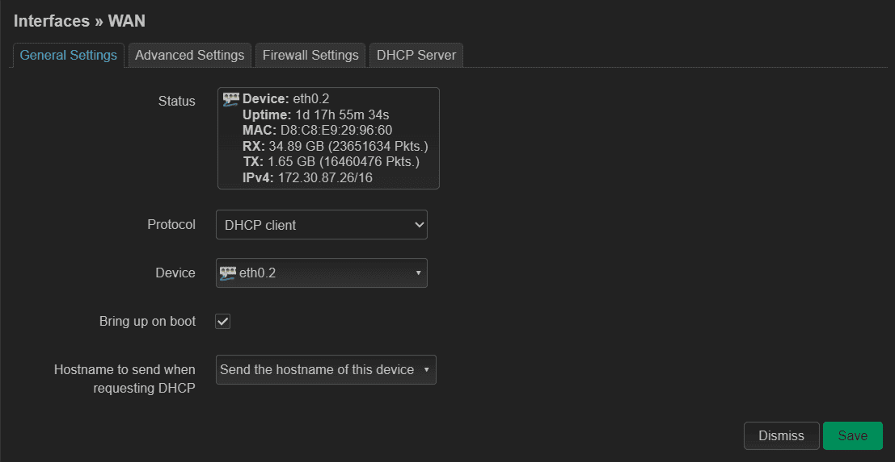
- 添加接口
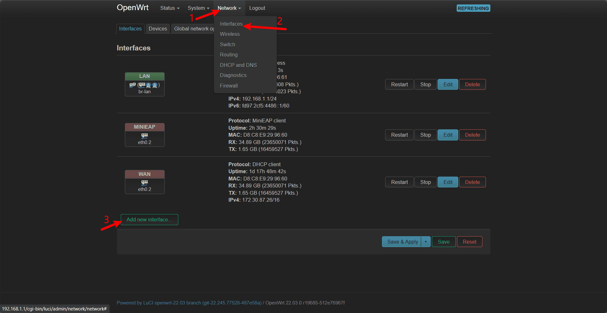
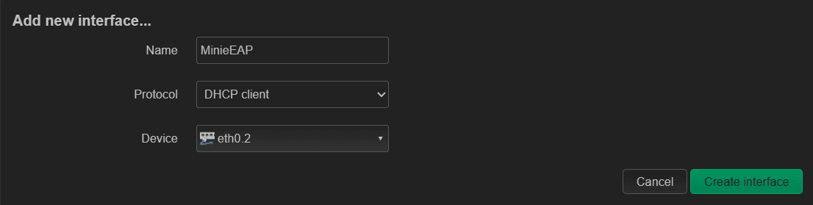
- 输入账号和密码，
Packet plugins设为rjv3
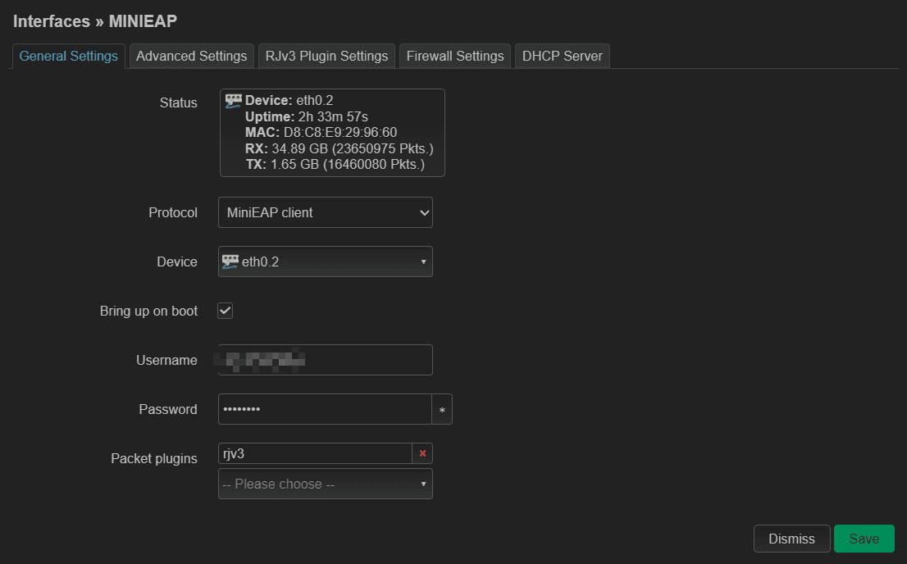
- DHCP 方式设置为
Disable之外的方式
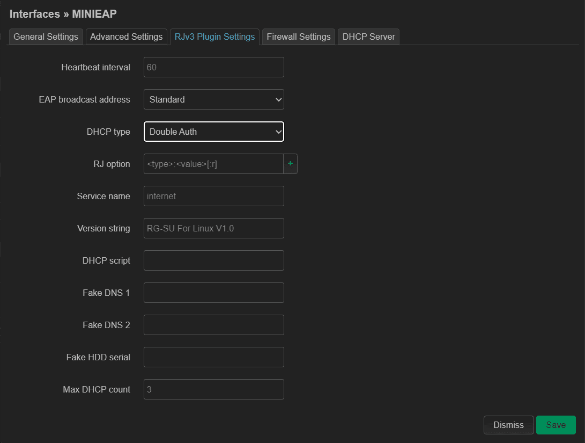
其他东西基本默认即可，配置完完成之后重启路由器，然后将校园网网线插入路由器 WAN 口即可。
总结
通过此次的折腾，成功将路由器刷入了 Openwrt 系统、编译并安装 MiniEAP 插件，实现了路由器自动认证校园网。就是每天时不时会掉线几次，有时还挺烦的，但是能够免去手动认证校园网并开启电脑热点等步骤，个人觉得功大于弊吧。
从中也学到了很多知识，诸如路由器网络基本配置，查找和解决一些网络异常问题、Linux 一些命令行的使用、简单的交叉编译流程等等。
参考与致谢
斐讯K1、K2、K2P 刷机、刷入Breed 辅助工具 | tb (tbvv.net)
斐讯K2刷不死breed与第三方固件教程 - 法号阿兴 - 博客园 (cnblogs.com)
斐讯K1K2新版固件v22.4.xx.xx简单刷机教程 - 网络技术 - 蛐蛐工作室 (qqgzs.com)
斐讯K2刷不死breed与第三方固件教程 - 法号阿兴 - 博客园 (cnblogs.com)
小米路由器4C刷机教程（openwrt） - 简书 (jianshu.com)
ysc3839 (Richard Yu) (github.com)
小米路由器4C刷openwrt | BBSD丿草丶帽的个人博客 (luhawxem.com)